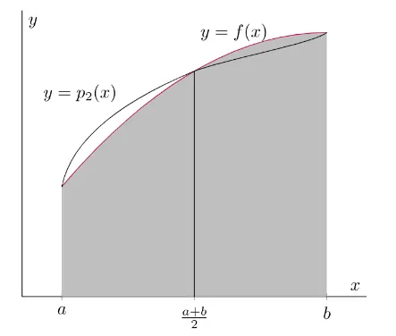

Simpson's Rule
Simpson's rule approximates a definite integral by integrating quadratic interpolants through sampled function values. On each panel it uses two endpoints and their midpoint, fitting a parabola through the three points. A composite rule repeats this construction across pairs of equal subintervals and adds their signed contributions. Compared with rectangles or straight-line trapezoids, the quadratic model captures more of the local curvature. For a sufficiently smooth integrand, this gives fourth-order composite accuracy and can reach a target error with fewer samples than a lower-order rule. The method is therefore useful when an antiderivative is unavailable but function values can be computed reliably; the error estimate below makes its smoothness requirements explicit.
The fundamental advantage of Simpson's rule lies in its ability to approximate the integral by considering not just the function's values at the endpoints of each subinterval but also at the midpoint. This approach allows the method to account for the function's curvature, providing a better fit to the actual shape of the graph. Consequently, Simpson's rule typically delivers higher accuracy with fewer subintervals, making it an efficient choice for many practical applications in engineering, physics, and other scientific disciplines where numerical integration is essential.
Mathematical formulation
The foundation of Simpson's rule is based on estimating the integral of a function $f(x)$ over a specified interval $[a, b]$ by approximating the region under the curve with a quadratic polynomial. This polynomial is constructed to pass through three key points: the two endpoints of the interval, $(a, f(a))$ and $(b, f(b))$, and the midpoint $\left(\frac{a+b}{2}, f\left(\frac{a+b}{2}\right)\right)$. By fitting a parabola through these points, Simpson's rule effectively captures the curvature of the function within the interval, leading to a more accurate approximation of the integral.
The basic formula to approximate the integral of $f(x)$ from $a$ to $b$ using Simpson's rule is given by:
$$ \frac{b - a}{6} \left[f(a) + 4f\left(\frac{a+b}{2}\right) + f(b) \right] $$
This formula calculates the weighted average of the function values at the endpoints and the midpoint, with the midpoint value being given four times the weight of the endpoints. The factor $\frac{b - a}{6}$ scales the sum appropriately based on the width of the interval.
To extend Simpson's rule to multiple subintervals, let $h$ represent the width of each subinterval. When the interval $[a, b]$ is divided into an even number of subintervals $N$, so that $h = \frac{b - a}{N}$ and $x_i = a + ih$, the approximation of the integral becomes:
$$ \int_a^b f(x) dx \approx \frac{h}{3} \sum_{k=1}^{N/2} \left[f(x_{2k-2}) + 4f(x_{2k-1}) + f(x_{2k}) \right] $$
In this summation, each pair of subintervals is treated together, ensuring that the number of intervals remains even. The function values are weighted accordingly, with the midpoints receiving a higher weight to account for the curvature captured by the quadratic approximation.
The diagram below visualizes the concept of Simpson's rule, illustrating how parabolic segments are fitted to the function's graph over each pair of subintervals:

This visual representation helps in understanding how the quadratic polynomials approximate the area under the curve, providing a more accurate estimation compared to linear approximations used in other numerical integration methods.
Deriving the weights
Map one pair of subintervals onto $t\in[-1,1]$ with $x=m+ht$. The quadratic interpolant through $t=-1,0,1$ is
$$ p(t)=f(m-h)\frac{t(t-1)}2+f(m)(1-t^2)+f(m+h)\frac{t(t+1)}2. $$
Integrating the three basis polynomials gives $1/3$, $4/3$, and $1/3$. Since $dx=h\,dt$,
$$ \int_{m-h}^{m+h}f(x)\,dx\approx\frac h3\bigl[f(m-h)+4f(m)+f(m+h)\bigr]. $$
At the shared endpoint of two adjacent pairs, the endpoint contributions add to $2$; the midpoint of each pair receives weight $4$. This explains the composite sequence $1,4,2,4,\ldots,2,4,1$ and why the number of equal subintervals must be even.
Odd powers about the midpoint integrate to zero, and the rule reproduces degrees zero through two by interpolation. It therefore also integrates every cubic exactly. For a check on the first nonzero error, apply the rule to $(x-m)^4$ over $[m-h,m+h]$: the integral is $2h^5/5$, while the rule gives $2h^5/3$. Their difference is $-4h^5/15=-h^5\cdot24/90$, consistent with the fourth-derivative error below. The general intermediate-point error formula assumes $f\in C^4([a,b])$.
Error term
For a single application over $[a, b]$ (with $h = \frac{b-a}{2}$), the error is
$$ \int_a^b f(x)\,dx - \frac{b-a}{6}\left[f(a) + 4f\left(\frac{a+b}{2}\right) + f(b)\right] = -\frac{h^5}{90} f^{(4)}(\xi) = -\frac{(b-a)^5}{2880} f^{(4)}(\xi) $$
for some $\xi \in (a, b)$. For the composite rule with $N$ subintervals of width $h = \frac{b-a}{N}$:
$$ E = -\frac{b-a}{180} h^4 f^{(4)}(\xi), \qquad |E| \le \frac{(b-a)\,h^4}{180} \max_{[a,b]} |f^{(4)}|. $$
Although the rule is built from a quadratic (degree-2) interpolant, the error depends on the fourth derivative, not the third. By symmetry the cubic term of the integrand integrates to the same value as its parabolic fit, so the rule is exact for all polynomials of degree three or lower and fails first for $x^4$. The composite rule is therefore fourth-order accurate: halving $h$ reduces the error by about a factor of 16.
Algorithm steps
An implementation needs a function to evaluate, finite endpoints $a<b$, and a positive even number $N$ of equal subintervals. It computes the spacing and samples, applies the alternating weights, and multiplies by the common factor $h/3$. The steps below keep the grid construction separate from the weighted sum so that the indexing and sample count can be checked directly:
Step 1: Partition the interval.
- Begin by dividing the interval $[a, b]$ into an even number of subintervals, denoted by $N$. The choice of $N$ affects the accuracy of the approximation; a larger $N$ generally leads to a more precise result.
- Calculate the width of each subinterval using $h = \frac{b - a}{N}$. Ensuring that $N$ is even is crucial for the application of Simpson's rule, as the method pairs subintervals for quadratic approximation.
Step 2: Evaluate function at required points.
- Evaluate $f(x_i)$ for $i=0$ to $N$, where $x_i=a+ih$. Each odd-indexed grid point is the midpoint of a pair of subintervals; no additional midpoint samples inside the individual width-$h$ subintervals are needed.
- These evaluations are essential for constructing the quadratic polynomials that approximate the function over each pair of subintervals.
Step 3: Apply simpson's rule formula.
$$ \int_a^b f(x) dx \approx \frac{h}{3} \left[f(x_0) + 4 \sum_{k=1}^{N/2} f(x_{2k-1}) + 2 \sum_{k=1}^{N/2 - 1} f(x_{2k}) + f(x_N) \right] $$
This formula accounts for the alternating weights of 4 and 2 applied to the function values at odd and even indices, respectively, ensuring that each pair of subintervals is accurately modeled by a parabola.
Step 4: Aggregate the results.
- Sum all the weighted function values as per the formula to obtain the total integral approximation.
- This aggregated sum represents the estimated area under the curve $f(x)$ over the interval $[a, b]$.
Simpson's rule systematically constructs a reliable approximation of the definite integral, balancing computational efficiency with high accuracy.
Example
To illustrate the application of Simpson's rule, consider the function $f(x) = x^2$. This example demonstrates how the method approximates the integral over a specific interval using a manageable number of subintervals.
Step 1: Choose interval and subdivisions.
- Let $a = 0$ and $b = 2$, and partition this interval into $N = 2$ equal subintervals. This choice ensures that the number of subintervals is even, as required by Simpson's rule.
- The width of each subinterval is $h = \frac{2 - 0}{2} = 1$, resulting in subintervals $[0, 1]$ and $[1, 2]$.
Step 2: Evaluate at required points.
- $f(0) = 0^2 = 0$
- $f(1) = 1^2 = 1$
- $f(2) = 2^2 = 4$
These evaluations provide the necessary data points for applying Simpson's rule.
Step 3: Apply simpson's rule formula.
$$ \frac{b - a}{6} \left[f(a) + 4f\left(\frac{a+b}{2}\right) + f(b) \right] = \frac{2 - 0}{6} \left[f(0) + 4f(1) + f(2) \right] = \frac{2}{6} \left[0 + 4(1) + 4 \right] = \frac{2}{6} \times 8 = \frac{16}{6} = \frac{8}{3} $$
This calculation yields an approximate value of $\frac{8}{3}$ for the integral.
Step 4: Compare with exact integral.
$$ \int_{0}^{2} x^2 dx = \left[\frac{x^3}{3} \right]_0^2 = \frac{8}{3} - 0 = \frac{8}{3} $$
In this case, Simpson's rule provides an exact result. This is expected for any quadratic, and in fact the rule is exact for every polynomial of degree three or lower (see the error term above).
Refinement and an adaptive error estimate
For a smooth integrand in the fourth-order regime, let $S_N$ use an even number $N$ of subintervals and $S_{2N}$ use half the spacing. The leading error changes by a factor of $16$, giving
$$ I-S_{2N}\approx\frac{S_{2N}-S_N}{15}. $$
The denominator is $16-1$, not $16$, because the difference compares two approximations that both have error. Adding this estimated correction gives $S_{2N}+(S_{2N}-S_N)/15$.
For $f(x)=x^4$ on $[0,2]$, $S_2=20/3$ and $S_4=77/12$. Their difference is $-1/4$, so the estimated correction to $S_4$ is $-1/60$, producing $32/5$, the exact integral in this example. Adaptive Simpson methods apply this comparison locally and subdivide panels whose estimated errors remain too large. The estimate relies on resolved, smooth behavior; a grid that misses a sharp feature can give misleading agreement between the two rules.
Advantages
- When compared to the Rectangle (Midpoint) Rule and the trapezoidal rule, the method often yields a more accurate approximation of definite integrals. This increased accuracy comes from using quadratic polynomials to model the function’s behavior, allowing it to capture curvature and more complex features. For smooth functions that can be closely approximated by parabolas over each pair of subintervals, the method can often reach a given accuracy with fewer subintervals than lower-order approaches; exactness is guaranteed for polynomials through degree three, rather than for arbitrary smooth functions. This efficiency is especially useful in computational applications where reducing the number of function evaluations saves significant processing time.
- The rule can be implemented with basic arithmetic operations and evaluations on a specified grid. Its fixed weight pattern makes each contribution easy to inspect, which is useful for learning and for checking an implementation. A fixed composite calculation is a weighted sum; adaptive subdivision can be added separately when a local error estimate is available. These simple components let the rule serve as a quadrature routine within larger scientific or engineering calculations.
- It is particularly effective for functions that are well-approximated by parabolas over small intervals. This makes the method ideal for integrating polynomials of degree three or lower (integrated exactly), as well as other smooth functions where a quadratic approximation is sufficiently accurate. By capturing the essential curvature of such functions, it minimizes the error associated with linear approximations, yielding more reliable results.
Limitations
- The method requires that the interval $[a, b]$ be divided into an even number of subintervals. This can be inconvenient when the available data points do not naturally align with an even partitioning. If an odd number of subintervals is initially chosen, users must adjust by either adding an extra subinterval or applying a different technique for the final piece, which complicates the implementation.
- Its reliance on quadratic polynomials means it performs best for functions that closely resemble parabolas within each pair of subintervals. For functions with significant higher-order curvature or behaviors not well captured by parabolic fits, it may produce large errors. In such cases, the approximation can be misleading unless the suitability of the method is carefully assessed relative to the function’s characteristics.
- Functions exhibiting rapid changes, oscillations, or discontinuities within the integration interval pose challenges. A single quadratic fit over each pair of subintervals may not capture sudden variations or sharp transitions, leading to substantial errors. For piecewise-defined functions, those with vertical asymptotes, or abrupt slope changes, the method can require an impractically large number of subintervals to reach acceptable accuracy, negating its computational advantages.
- Like all numerical methods, it is subject to numerical stability issues and roundoff errors—particularly when working with very large or very small intervals or limited numerical precision. Error accumulation can compromise the approximation’s integrity, sometimes necessitating higher-precision arithmetic to mitigate these effects.
- The method is designed for definite integrals over finite intervals and is not inherently suited to improper integrals—those with infinite integration limits or integrand singularities. Applying it to such problems demands additional techniques or adaptations, which can complicate the process and diminish its overall effectiveness.